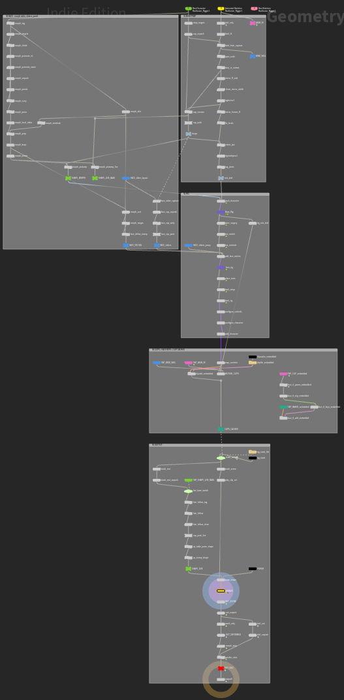

Rig Settings
The Rig Settings folder on the rig node (closed by default) holds the settings you set once per character, and the Viewport folder above it controls how the character draws in the SOP viewport.
Stash Rig
Building a rig and baking its clips takes a minute or so. Without help, Houdini would redo that every time you reopen the scene, and again whenever something it depends on changes, such as the frame range. Stash Rig stores the built, baked rig in the node instead, so reopening the scene or changing the frame range loads it in seconds. Measured on a standard character imported from FBX: about 3 to 4 seconds to reopen with the rig stashed, against 54 seconds without.
Update Motion Clips stores the new bake as part of its update, so the stash never goes stale. The Rigger's own Stash Rig toggle (in Character ▸ Build) decides this for a new rig; the one here changes it afterwards. Off, the rig is rebuilt live whenever it needs to be, about as long as the first build.
Stash In says where the stashed rig lives. Changing it writes nothing by itself.
- Inside the Hip: the scene file carries the rig and every baked clip. Simple and self-contained, but the hip gets big: about 220 MB for a standard character, more for an HD one, plus each clip.
- External File: Save to Disk writes the rig to the Geometry File (default
$HIP/jv_rig_cache/$OS.bgeo.sc), and each baked clip beside it as<file>_clip_<clip>.bgeo.sc. The hip stays small, and the files are compressed. On the same standard character: a 4.3 MB hip plus an 82 MB rig file.
Use Inside the Hip while you're working on one machine, and External File once scenes start piling up or you need to move them around.
Careful with this one: the files travel with the hip
With External File, the hip only points at the files. Copy the jv_rig_cache folder along with the scene. If the clip files go missing, press Update Motion Clips to bake the clips again.
Hair Follows Head Only
Off (the default), the hair keeps Character Creator's own skinning, so long hair drapes over moving shoulders. On, every hair mesh follows the head only. Switching re-cooks the output (a few seconds, longer on heavy characters) and keeps your keys.
Viewport materials
The Viewport folder (closed by default, with a checkbox in its header) shows the textured character in the SOP viewport, from the textures the Rigger resolved at Build Character. Off draws it plain grey. This is the viewport only; Karma renders the full materials either way.
- Textured picks which groups draw textured: body, eyes, teeth, and clothing & accessories.
- Hair is Off, Opaque Cards (solid cards in the hair's average colour, the default) or Transparent Cards (the real opacity maps, best in an unlit viewport).
The rig node is unlocked
The build unlocks the rig node, because your keys are stored in its interior (on the ANIMATE node; see Animating). The licence lets you open and modify it in your own scenes.

Never use Match Current Definition on a built rig
It would wipe the generated rig and your animation.